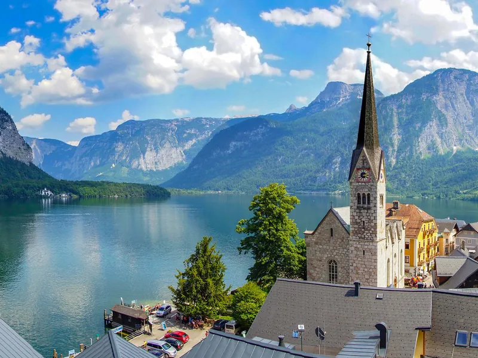

Przewodnik po Hallstatt → Wszystkie przewodniki
Hallstatt: samodzielny spacer z audioprzewodnikiem TouringBee
Bez grupy i bez rozkładu: przez wioskę od południowego końca do północnego punktu widokowego, 17 przystanków.
- ★ 4,7
- ~2 godziny
- 17 przystanków
- offline
- 9,99 €
Kup audioprzewodnik — 9,99 €Jak to działa
Autor: Eugene · Aktualizacja 5 listopada 2026

Krótka odpowiedź: czy potrzebujesz tu wycieczki z przewodnikiem?
Hallstatt to wioska, którą przejdziesz na drugą stronę w kwadrans, i nie ma w niej gdzie się zgubić. Uliczki, rynek, oba przykościelne dziedzińce, cmentarz na zboczu nad wioską i północny punkt widokowy są bezpłatne i otwarte o każdej porze; jedyne miejsca, do których kupuje się bilet, to kostnica (2 €), muzeum (12 €) i kopalnia soli. Przewodnik, który poprowadzi cię za rękę, jest tu naprawdę opcjonalny.
Prawdziwe pytanie brzmi: skąd weźmiesz kontekst. Możesz czytać tablice, iść z przewodnikiem książkowym w ręku, poczytać o wiosce przed wyjazdem. Audioprzewodnik TouringBee robi to samo, nie każąc ci wpatrywać się w ekran: dochodzisz na miejsce, włączasz przystanek i słuchasz, a oczy zostają przy wiosce. Siedemnaście przystanków — dlaczego domy stoją jeden na drugim, co kobiety znosiły z góry dwa razy dziennie i co takiego stało się tu w 1846 roku, że dało nazwę całej epoce europejskiej prehistorii. Nagrania są po angielsku, niemiecku, hiszpańsku, włosku i rosyjsku — polskiej wersji na razie nie ma, więc większość polskojęzycznych gości wybiera angielską.
Dlaczego z audioprzewodnikiem jest lepiej
Rozumiesz, na co patrzysz. Domy, schody, czaszka z namalowanym wieńcem — każde z nich ma swoje wyjaśnienie i żadnego z tych wyjaśnień nie znajdziesz na tablicy w pobliżu.
Idziesz we własnym tempie. Przystań na kawę, wróć w to samo miejsce, posłuchaj jeszcze raz. Nikt na ciebie nie czeka i ty nie czekasz na nikogo.
Nie potrzebujesz zasięgu. Trasa, mapa i nagrania pobierają się na telefon z wyprzedzeniem; potem urządzenie radzi sobie samo, bez żadnego połączenia. O roamingu i o zasięgu w dolinie możesz przestać myśleć.
Posłuchaj początku spaceru
wstęp, około minuty. Próbka jest po angielsku, tak jak sama trasa — polskiej wersji nie ma.
Jedna historia w całości: dlaczego czaszki są malowane
W kaplicy św. Michała, położonej pod kościołem katolickim, stoją półki pełne ludzkich czaszek. Hallstacka informacja turystyczna podaje, że malowanych jest ponad sześćset, a inwentaryzacja przeprowadzona między 1948 a 1950 rokiem policzyła w kaplicy 2104 czaszki, malowane i niemalowane razem. W wiosce, której księgi parafialne notują około trzydziestu tysięcy zgonów przed 1900 rokiem, to drobny ułamek — co od razu rodzi oczywiste pytanie: dlaczego wybrano właśnie te.
Oczywista odpowiedź brzmi tak: cmentarzowi zaciśniętemu między górą a jeziorem zabrakło w pewnym momencie miejsca, więc groby wykorzystywano ponownie, a kości przenoszono do kaplicy. Informacja turystyczna podaje to wyjaśnienie ostrożnie — jako pogląd, który obowiązywał przed badaniem prowadzonym w latach 1974–1993, nie potwierdzając go ani nie odrzucając. Pewne jest natomiast coś innego: przeniesienie było drugim pogrzebem, a nie pozbyciem się szczątków. Żeby człowiek nie rozpłynął się we wspólnym stosie, na kości czołowej wypisywano imię albo inicjały, a wokół nich malowano wieniec.
I tu detal, przy którym warto się zatrzymać. Wiek czaszki czyta się z wieńca: im ciemniejszy wieniec, tym starsza czaszka. Najwcześniejsze wieńce są gęste i ciemne. Potem przychodzą kwiaty na czole, potem zielone liście przy skroniach — dąb, bluszcz, oleander. Czarny krzyż na czole jest niemal zawsze. Najpóźniejsze malowania, z początku XIX wieku, rozpoznasz od pierwszego spojrzenia: cienkie gałązki bluszczu po obu stronach, łacińskie litery zamiast gotyku, węższy krzyż. Możesz stanąć przed półką i sam poukładać ją chronologicznie, nie czytając przy tym ani jednego podpisu.
Takich historii na trasie jest siedemnaście.
Posłuchaj pozostałych historii — 9,99 €
Trasa: 7 etapów, 17 przystanków
Poniżej opisaliśmy 7 głównych etapów spaceru. W aplikacji trasa jest podzielona na 17 przystanków z opowieściami audio i ilustracjami.
- Południowy koniec wioski, dzielnica Lahn
- Promenada nad jeziorem
- Rynek
- Kościół protestancki
- Kryte schody i górne uliczki
- Kościół katolicki, cmentarz na zboczu i kostnica
- Północny punkt widokowy na Gosaumühlstraße
1. Południowy koniec wioski, dzielnica Lahn. Tutaj dojeżdżają autobusy 542 i 543, tutaj są też parkingi i dolna stacja kolejki, która wywozi na górę solną.
2. Promenada nad jeziorem. Szopy na łodzie przy samej wodzie, łabędzie i pierwszy widok na całą wioskę z dołu.
3. Rynek. Malowane elewacje wokół kolumny Trójcy Świętej — jedyny płaski kawałek ziemi w Hallstatt.
4. Kościół protestancki. Smukła wieża nad samą wodą, ta, która trafia na każde zdjęcie wioski.
5. Kryte schody i górne uliczki. Podejście z rynku pod kościół to jedyna prawdziwa wspinaczka na całej trasie, około trzydziestu metrów w pionie. Właśnie tutaj widać, dlaczego domy stoją jeden na drugim: między skalną ścianą a brzegiem jeziora po prostu nie ma na nic więcej miejsca.
6. Kościół katolicki, cmentarz na zboczu i kostnica. Cmentarz jest bezpłatny i prawie zawsze pusty; kostnica kosztuje 2 €.
7. Północny punkt widokowy na Gosaumühlstraße. Pocztówkowy kadr, ten, po którym wszędzie rozpoznaje się Hallstatt.
Od dworca autobusowego w Lahn do północnego punktu widokowego jest tą drogą około kilometra. Start od dolnej stacji kolejki na górę solną dodaje do tego jeszcze mniej więcej dwieście pięćdziesiąt metrów. Dla porównania: oznakowana pętla „Ortsrundgang Hallstatt”, publikowana przez lokalną organizację turystyczną, obejmuje te same miejsca i wraca do punktu startu — podana jest jako 2,7 km, 72 metry podejścia i około 50 minut marszu.
Trasa nie obejmuje każdej uliczki w wiosce — to główna linia przejścia. Możesz z niej zejść w dowolnym miejscu i wrócić na nią w dowolnym innym punkcie: kolejność przystanków jest podpowiedzią, nie wymogiem.
Między przystanią w Lahn a północnym punktem widokowym mieszka 237 osób. W szczytowym dniu, według własnych obliczeń gminy w planie zarządzania dziedzictwem UNESCO, wypada na każdą z nich prawie czterdziestu gości.
Jeśli przyjeżdżasz pociągiem
Stacja kolejowa Hallstatt leży na przeciwnym brzegu jeziora, a do wioski dopływa się promem — siedem minut rejsu, 4 € w jedną stronę, płatność tylko gotówką. Prom przybija w centrum, przy przystani Hallstatt Markt, czyli około minuty spacerem od rynku. Oznacza to, że trafiasz nie na początek trasy, ale prosto w jej środek.
To nie problem, bo zacząć możesz w dowolnym miejscu. Rozsądna kolejność jest taka: najpierw północna połowa — rynek, kościoły, kostnica i punkt widokowy — a potem spacer na południe brzegiem jeziora, do promenady i do Lahn. Powrót na prom to te same kilkaset metrów, które już przeszedłeś.
Prom kursuje przez cały rok i jest dopasowany do pociągów; przewoźnik zaznacza, że godziny odjazdu mogą się przesunąć, jeśli pociąg się spóźni. Aktualne godziny i ceny znajdziesz na stronie Hallstättersee Schifffahrt (strona jest po angielsku) — sprawdź ostatni rejs przed wyjściem, bo zależy on od daty i od rozkładu pociągów.
Samodzielnie, z audioprzewodnikiem albo z przewodnikiem na żywo
Samodzielnie — 0 €. O dowolnej porze i tak długo, jak chcesz. Uliczki, rynek, cmentarz na zboczu i punkt widokowy nic nie kosztują. Kontekst zbierasz wtedy sam: tablice informacyjne, przewodnik książkowy, lektura przed wyjazdem.
Z audioprzewodnikiem TouringBee — 9,99 € za osobę. Jedna płatność, rok dostępu. 17 przystanków, mapa offline, ilustracje. Startujesz już minutę po przyjeździe, w dowolny dzień i o dowolnej godzinie, i przerywasz tyle razy, ile chcesz. Każdy w twojej grupie słucha na własnym telefonie.
Z przewodnikiem na żywo — od 5 € za osobę. Informacja turystyczna prowadzi „Welterberundgang” przez historyczne centrum: 1,5 godziny, po niemiecku, angielsku i włosku, bilety w biurze na Seestraße (cena i program według informacji biura, sprawdzone 5 listopada 2026). Spacery odbywają się według stałego grafiku, który trzeba sprawdzić z wyprzedzeniem. Prywatny spacer z przewodnikiem to od 168 € za grupę.
Główna różnica to nie cena, a moment, w którym idziesz. Do Hallstatt bardzo często przyjeżdża się tylko na kilka godzin, między dwoma pociągami albo autokarami — a wpisanie się w czyjś cudzy grafik w takim krótkim okienku nie zawsze się udaje. Audioprzewodnik startuje w chwili, gdy zejdziesz z promu.
Bilety wejściowe są osobno, niezależnie od wyboru: kostnica 2 €, Muzeum Światowego Dziedzictwa 12 €, kopalnia soli 49 € z kolejką albo 33 € bez niej.
Jak to działa
1. Kupujesz. Jedna płatność 9,99 €. E-mail aktywacyjny przychodzi w ciągu kilku minut.
2. Instalujesz aplikację. TouringBee na iPhone'a i Androida; język wybierasz w środku.
3. Pobierasz wycieczkę z wyprzedzeniem. Po Wi-Fi w hotelu albo w pociągu — potem internet nie jest już potrzebny.
4. Idziesz i słuchasz. Mapa pokazuje, gdzie jesteś i gdzie jest następny przystanek. Kiedy do niego dojdziesz, otwierasz przystanek i wciskasz play. Nic nie włącza się samo: opowieść nie wejdzie w środek rozmowy i nie odpali w złym momencie tylko dlatego, że skręciłeś w boczną uliczkę. Pauza, powtórka i powrót do dowolnego przystanku — tyle razy, ile chcesz, przez cały rok.
Podpowiedź: naładuj telefon do co najmniej 80% i weź słuchawki — nad wodą i na rynku bywa tłoczno.
Dlaczego możesz zaufać temu przewodnikowi
4,7 w App Store — stan na 5 listopada 2026, z 85 ocen w sklepie amerykańskim. Scenariusze piszą historycy, a nagrania czyta profesjonalny lektor. Jedna płatność, rok dostępu, bez subskrypcji i bez żadnych dopłat na trasie.
Opinii o samej trasie po Hallstatt jeszcze nie ma — sprzedajemy ją tylko tutaj i recenzje się na niej nie zbierają. Poniżej zebraliśmy opinie o aplikacji TouringBee i o naszych innych trasach, cytowane dosłownie i ze wskazaniem sklepu, z którego pochodzą. Żadna z nich nie wspomina o Hallstatt; to ocena tego, jak działa sam format.
"Perfect for a an overview for a first time visitor" — EGP1997, App Store (sklep brytyjski), luty 2026, 5★, o trasie po Wiedniu.
"Very informative. Great way to walk around the city." — David Brisbane, App Store (sklep australijski), maj 2025, 5★, o trasie po Wiedniu.
"Great stories and history with integrated map and pictures. Exactly what I wanted. Exploring at my own pace." — Dino in Colorado, App Store (sklep amerykański), maj 2026, 5★.
"Great for exploring at your own speed - and you can repeat if you need!" — Flick the switch, App Store (sklep brytyjski), czerwiec 2025, 5★.
Hallstatt Town Tour — audioprzewodnik
9,99 € · jedna płatność · rok dostępu · za osobę
- 17 przystanków przez wioskę, od południowego końca do północnego punktu widokowego
- Mapa offline — roaming niepotrzebny
- Scenariusze pisane przez historyków, z ilustracjami
- Nagrania po angielsku, niemiecku, hiszpańsku, włosku i rosyjsku — polskiego w tym zestawie nie ma
Co warto wiedzieć przed wyjściem
Gdzie zacząć. Trasa jest ułożona z południa na północ, ale zacząć możesz w dowolnym miejscu. Jeśli przyjeżdżasz autobusem albo samochodem, startuj w Lahn i idź dalej brzegiem jeziora. Jeśli przyjeżdżasz pociągiem, trafiasz od razu do centrum, na przystań Markt, i wtedy łatwiej najpierw podejść do kościołów, a promenadę zostawić sobie na drogę powrotną.
Buty i nachylenie. Główna linia biegnie przy wodzie i jest prawie płaska. Jedyne podejście na trasie to kryte schody prowadzące z rynku pod kościół katolicki i do kostnicy, czyli około trzydziestu metrów w pionie. Szpilki zostaw w hotelu.
Kiedy iść. Przed wpół do dziesiątej rano i po wpół do piątej po południu wioska należy do tych, którzy w niej nocują. To są najlepsze godziny na słuchanie, a zdjęcia wychodzą wtedy bez tyłów cudzych głów na pierwszym planie.
Bilety nie są wliczone. Kostnica 2 €, Muzeum Światowego Dziedzictwa 12 €, kopalnia soli 49 € z kolejką. Bilety i wycieczki w Hallstatt można zarezerwować z wyprzedzeniem.
Najczęstsze pytania
Czy Hallstatt można zwiedzić samodzielnie, bez wycieczki z przewodnikiem?
Tak. Uliczki, rynek, oba przykościelne dziedzińce, cmentarz na zboczu i północny punkt widokowy są bezpłatne i otwarte o każdej porze. Płatne są tylko kostnica, muzeum i kopalnia soli. Pytanie nie brzmi więc, czy cię gdzieś wpuszczą, ale skąd weźmiesz wyjaśnienia — i właśnie to bierze na siebie audioprzewodnik.
Ile jest przystanków i ile to zajmuje?
17 przystanków audio. Na spokojny spacer ze zdjęciami i postojami licz około dwóch godzin; jeśli nie będziesz się nigdzie zatrzymywać, idzie się wyraźnie szybciej. Od dworca autobusowego w Lahn do północnego punktu widokowego jest około kilometra.
Czy w czasie spaceru potrzebny jest internet?
Nie. Trasa, mapa i wszystkie nagrania pobierają się wcześniej po Wi-Fi, a potem telefon działa już bez żadnego połączenia. I tak się to przydaje, bo zasięg w dolinie bywa kapryśny.
Czy opowieści włączają się same, kiedy dojdziesz na miejsce?
Nie, i to jest zamierzone. Mapa pokazuje, gdzie jesteś i gdzie jest następny przystanek; opowieść włączasz sam, w chwili gdy już dotarłeś na miejsce i masz ochotę słuchać. Nic nie wchodzi w środek rozmowy i nic nie odpala w złym momencie tylko dlatego, że skręciłeś w boczną uliczkę.
Czy audioprzewodnik zawiera bilet do kostnicy?
Nie. Bilety wejściowe nigdy nie są wliczone: kostnica 2 €, muzeum 12 €, kopalnia soli 49 € albo 33 €. Audioprzewodnik ma swoje opowieści i przy wejściu, i w środku, ale sam bilet kupujesz już na miejscu.
Przyjeżdżam pociągiem — gdzie zacząć?
Prom ze stacji kolejowej przybija w samym centrum wioski, przy przystani Hallstatt Markt, minutę spacerem od rynku. To jest środek trasy. Zacznij od najbliższego przystanku, przejdź najpierw północną połowę aż do punktu widokowego, a potem wróć i idź na południe brzegiem jeziora.
W jakich językach jest audioprzewodnik?
Po angielsku, niemiecku, hiszpańsku, włosku i rosyjsku. Polskiej wersji na razie nie ma — w praktyce najwygodniejszym wyborem jest angielska. Język wybierasz w aplikacji, zaczynając wycieczkę.
Czy nadaje się dla dzieci?
Trasa jest krótka, a opowieści nie mają formy wykładu: historii o czaszkach z malowanymi wieńcami i o tym, co dwa razy dziennie znoszono z góry, dzieci słuchają chętniej niż dorośli. Wózek spokojnie przejedzie promenadą i rynkiem, ale na cmentarz i do kostnicy prowadzą schody.
Przeczytaj dalej
Podsumowanie
Hallstatt da się przejść bez przewodnika w godzinę i zostaje wtedy w pamięci jako ładny obrazek. Z audioprzewodnikiem ten sam spacer zajmuje około dwóch godzin i zostaje jako miejsce, które ma za sobą siedem tysięcy lat historii i bardzo niewiele płaskiego terenu. Cała różnica to 9,99 € zapłacone raz i rok dostępu.
Przejdź Hallstatt z audioprzewodnikiem →
Ceny wejść, rozkład promu i spacer informacji turystycznej sprawdzono 5 listopada 2026 w Hallstättersee Schifffahrt, Salzwelten, Muzeum Światowego Dziedzictwa i na dachstein.salzkammergut.at. Rozkład promu obowiązuje do 13 grudnia 2026. Część linków na tej stronie to linki afiliacyjne: jeśli zrobisz przez nie rezerwację, możemy dostać niewielką prowizję, a ty nie zapłacisz za to ani centa więcej.